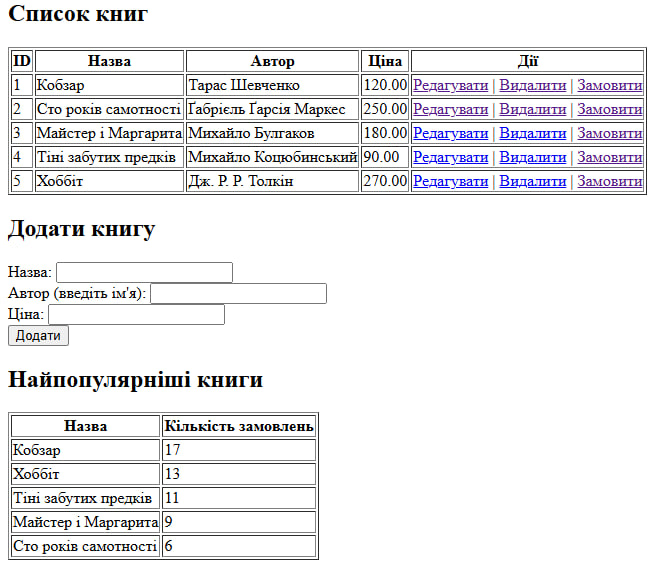
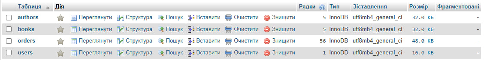
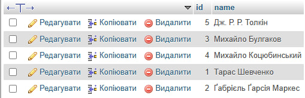
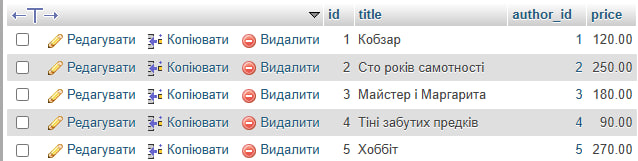
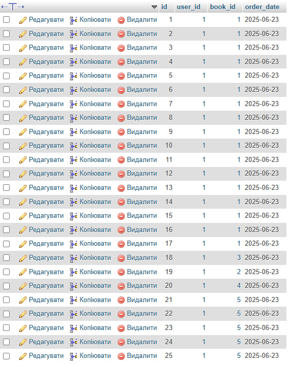
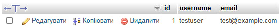

Тема: Міні-проєкт: створення динамічного веб-додатка.
Виконавець: Старенький Богдан Сергійович
Група: KN1-B22
Створити таблиці MySQL для зберігання даних про книги, авторів та користувачів.
Реалізувати інтерфейс для додавання, редагування та видалення інформації про книги.
Відобразити звіт про найпопулярніші книги за кількістю замовлень.
Переглянути розв’язок      